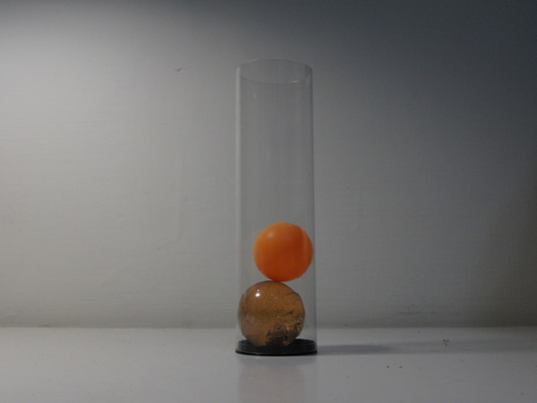

大球撞小球
↑大球撞小球影片，後半段有慢動作喔。

↑這是一個作業常見的題目，大球、小球、地板間均為彈性碰撞，求碰撞後小球反彈的高度。
想一想：為何小球反彈後會比原來釋放的位置更高？
如果大球小球的質量可以任意改變，你會怎樣選擇他們的質量，好讓小球反彈到最高？
小球反彈的最大高度是 h 的多少倍呢？

↑演出人員：大球(彈力橡膠球)、小球(乒乓球)、透明塑膠筒。
========= 感 謝 ========
感謝 師大物理系 黃福坤 教授提供可以高速錄影的相機： CASIO EX-F1。
感謝 1268班 沈柏廷 提供透明塑膠筒，蔡士賢 提供白色乒乓球(雖然沒拍到)。